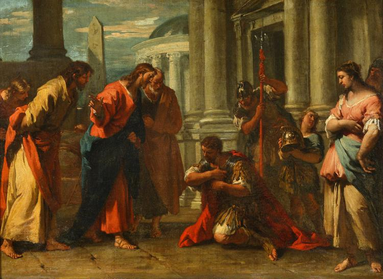
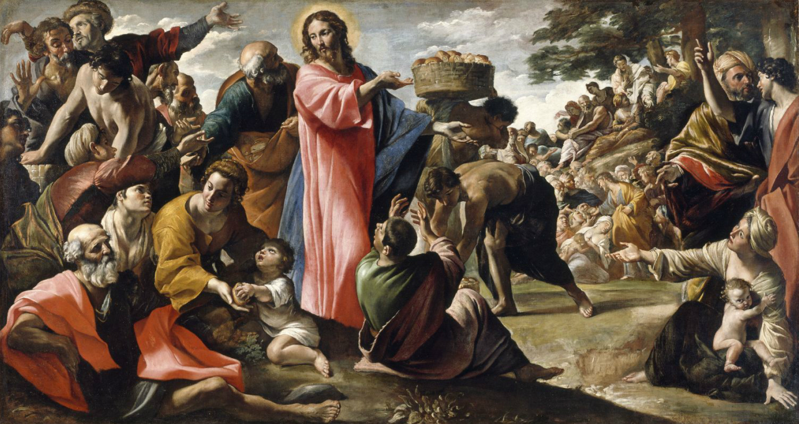

Gallery of Jesus' Miracles
This gallery showcases the miracles performed by Jesus, as recorded in the Bible. Each miracle is presented with an image and a short description.

Jesus turned water into wine at a wedding in Cana, marking His first miracle. (John 2:1-11)

Jesus healed the son of a nobleman from Capernaum, showcasing His power over distance and illness. (John 4:46-54)

Jesus healed a man who was blind from birth, showcasing His compassion and divine power. (John 9:1-12)

Jesus walked on water to demonstrate His divine authority. (Matthew 14:22-33)

Jesus fed 5000 men with five loaves of bread and two fish, illustrating His miraculous provision. (John 6:1-14)